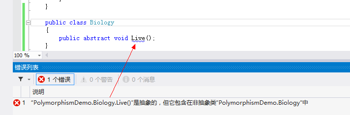
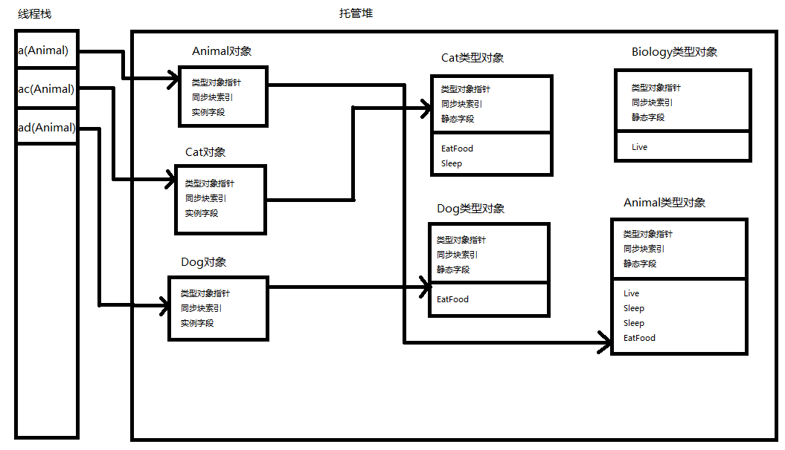

皆さんはオブジェクト指向の三大特徴であるカプセル化、継承、ポリモーフィズムについてよくご存知で、誰でも一言二言は言えると思います。しかし、ほとんどの人はこれらが何であるかを知っているだけで、CLR 内部でどのように実装されているかは知りません。そこで、この記事では主にポリモーフィズムのいくつかの概念と内部実装のメカニズムについて説明します。
一、ポリモーフィズムの概念
まずポリモーフィズムとは何かを説明します。同じ操作が異なるオブジェクトに作用するとき、異なる解釈が可能で、異なる実行結果を生み出す、これがポリモーフィズムです。言い換えれば、実際には同じ型のインスタンスが「同じ」メソッドを呼び出しても、結果が異なるということです。ここで「同じ」に引用符を付けたのは、ここでいう同じメソッドは見た目が同じだけであり、実際に呼び出されるメソッドは異なるからです。
ポリモーフィズムと言えば、どうしても以下の概念に触れずにはいられません。オーバーロード、オーバーライド、仮想メソッド、抽象メソッド、そして隠蔽メソッドです。以下でそれぞれの概念を紹介します。
1、オーバーロード(overload): 同じスコープ（通常は1つのクラス）内の2つ以上のメソッドで、メソッド名が同じでパラメータリストが異なるものをオーバーロードと呼びます。これには3つの特徴があります（通称「2つの必須、1つの任意」）。
- メソッド名は同じである必要があります
- パラメータリストは異なる必要があります
- 戻り値の型は異なってもかまいません
例：
public void Sleep()
{
Console.WriteLine("Animal睡觉");
}
public int Sleep(int time)
{
Console.WriteLine("Animal{0}点睡觉", time);
return time;
}
2、オーバーライド(override): サブクラスで自分のニーズを満たすために、あるメソッドの異なる実装を再定義するには、override キーワードを使用します。オーバーライドされるメソッドは仮想メソッドである必要があり、virtual キーワードを使用します。その特徴は（3つの同じ）です。
- 同じメソッド名
- 同じパラメータリスト
- 同じ戻り値
例：親クラスでの定義：
public virtual void EatFood()
{
Console.WriteLine("Animal吃东西");
}
サブクラスでの定義：
public override void EatFood()
{
Console.WriteLine("Cat吃东西");
//base.EatFood();
}
ヒント：よく「オーバーロードとオーバーライドの違いは？」と聞かれます。また、ネット上ではこの2つの違いは C# の面接でよく出る質問の一つになっています。実際にはこの2つの概念はまったく関係がなく、ただどちらも「重」という漢字が含まれているだけです。比較する意味はなく、それぞれの定義の違いを区別すればよいのです。
3、仮想メソッド: 基底クラスで定義され、派生クラスでオーバーライドできるメソッドです。virtual キーワードを使用して定義します。例：
public virtual void EatFood()
{
Console.WriteLine("Animal吃东西");
}
注意: 仮想メソッドは直接呼び出すこともできます。例：
Animal a = new Animal(); a.EatFood();
実行結果は次のとおりです。
Animal吃东西
4、抽象メソッド: 基底クラスで定義され、派生クラスでオーバーライドしなければならないメソッドです。使用abstractキーワードで定義します。例：
public abstract class Biology
{
public abstract void Live();
}
public class Animal : Biology
{
public override void Live()
{
Console.WriteLine("Animal重写的抽象方法");
//throw new NotImplementedException();
}
}
注意：抽象メソッドは抽象クラス内でのみ定義できます。抽象クラス内で定義しない場合、次のようなエラーが発生します。

仮想メソッドと抽象メソッドの違いは: 抽象クラスはインスタンス化できないため、抽象メソッドは呼び出すことができません。つまり、抽象メソッドは決して実装されることはありません。
5、隠蔽メソッド: 派生クラスで定義され、基底クラスのあるメソッドと同じ名前を持つメソッドです。new キーワードを使用して定義します。例えば、基底クラス Animal に Sleep() メソッドがあるとします。
public void Sleep()
{
Console.WriteLine("Animal Sleep");
}
では、派生クラス Cat で隠蔽メソッドを定義するコードは次のとおりです。
new public void Sleep()
{
Console.WriteLine("Cat Sleep");
}
または次のとおりです。
public new void Sleep()
{
Console.WriteLine("Cat Sleep");
}
注意：
- （1）隠蔽メソッドは基底クラスの仮想メソッドだけでなく、基底クラスの非仮想メソッドも隠蔽できます。
- （2）隠蔽メソッドでは、親クラスのインスタンスは親クラスのメソッドを呼び出し、子クラスのインスタンスは子クラスのメソッドを呼び出します。
- （3）前条と対比すると、オーバーライドメソッドでは、子クラスの変数は子クラスでオーバーライドされたメソッドを呼び出します。親クラスの変数は、その親クラスが参照しているのが子クラスのインスタンスか、それとも自分自身のインスタンスかによります。親クラスのインスタンスを参照している場合は基底クラスのメソッドを呼び出し、派生クラスのインスタンスを参照している場合は派生クラスのメソッドを呼び出します。
さて、基本概念の説明は終わりました。次に例を見てみましょう。まず、いくつかのクラスを作成します。
public abstract class Biology
{
public abstract void Live();
}
public class Animal : Biology
{
public override void Live()
{
Console.WriteLine("Animal重写的Live");
//throw new NotImplementedException();
}
public void Sleep()
{
Console.WriteLine("Animal Sleep");
}
public int Sleep(int time)
{
Console.WriteLine("Animal在{0}点Sleep", time);
return time;
}
public virtual void EatFood()
{
Console.WriteLine("Animal EatFood");
}
}
public class Cat : Animal
{
public override void EatFood()
{
Console.WriteLine("Cat EatFood");
//base.EatFood();
}
new public void Sleep()
{
Console.WriteLine("Cat Sleep");
}
//public new void Sleep()
//{
// Console.WriteLine("Cat Sleep");
//}
}
public class Dog : Animal
{
public override void EatFood()
{
Console.WriteLine("Dog EatFood");
//base.EatFood();
}
}
次に、実行する必要のあるコードを見てみましょう。
class Program
{
static void Main(string[] args)
{
//Animal的实例
Animal a = new Animal();
//Animal的实例，引用派生类Cat对象
Animal ac = new Cat();
//Animal的实例，引用派生类Dog对象
Animal ad = new Dog();
//Cat的实例
Cat c = new Cat();
//Dog的实例
Dog d = new Dog();
//重载
a.Sleep();
a.Sleep(23);
//重写和虚方法
a.EatFood();
ac.EatFood();
ad.EatFood();
//抽象方法
a.Live();
//隐藏方法
a.Sleep();
ac.Sleep();
c.Sleep();
Console.ReadKey();
}
}
まず、使用する必要のあるクラスのインスタンスをいくつか定義します。注意すべき点は次のとおりです。
- (1) Biology クラスは抽象クラスであり、インスタンス化できません。
- (2) 変数 ac は Animal のインスタンスですが、Cat オブジェクトを指しています。Cat 型は Animal 型の派生クラスであるため、この変換は問題ありません。これもポリモーフィズムの要点です。
では、段階ごとに分析してみましょう。
1、
//重载 a.Sleep(); a.Sleep(23);
明らかに、Animal の変数 a が呼び出す2つの Sleep メソッドはオーバーロードされたメソッドです。最初の文は引数なしの Sleep() メソッドを呼び出し、2番目の文は int 型の引数を1つ持つ Sleep メソッドを呼び出します。2つの Sleep メソッドの戻り値が異なることに注意してください。これはオーバーロードの3つの特徴の最後の特徴——戻り値は異なってもよいことを示しています。
実行結果は次のとおりです。
Animal Sleep Animal在23点Sleep
2、
//重写和虚方法 a.EatFood(); ac.EatFood(); ad.EatFood();
この部分では、a、ac、ad はすべて Animal のインスタンスですが、参照しているオブジェクトが異なります。a は Animal オブジェクトを参照し、ac は Cat オブジェクトを参照し、ad は Dog オブジェクトを参照します。この違いによって実行結果にどのような違いが生じるのでしょうか。実行結果を見てみましょう。
Animal EatFood Cat EatFood Dog EatFood
最初の文では Animal インスタンスが Animal の仮想メソッド EatFood を直接呼び出しており、何の問題もありません。
2番目と3番目の文では、同じく Animal のインスタンスですが、それぞれ Cat オブジェクトと Dog オブジェクトを指しているため、Cat クラスと Dog クラスでそれぞれオーバーライドされた EatFood メソッドが呼び出されます。あたかも Cat インスタンスと Dog インスタンスが直接 EatFood メソッドを呼び出したかのようです。これがまさにポリモーフィズムの現れです。同じ操作が異なるオブジェクトに作用すると、異なる解釈が可能で、異なる実行結果を生み出します。
3、
//抽象方法 a.Live();
これは比較的簡単で、親クラス Biology の Live メソッドを直接オーバーライドしています。実行結果は次のとおりです。
Animal重写的Live
4、
//隐藏方法 a.Sleep(); ac.Sleep(); c.Sleep();
隠蔽メソッドを分析するときは、仮想メソッドやオーバーライドと比較する必要があります。変数 a が Animal クラスの Sleep メソッドを呼び出し、変数 c が Cat クラスの Sleep メソッドを呼び出すことには異論はありません。しかし、変数 ac は Cat 型のオブジェクトを参照しています。これは Animal 型の EatFood メソッドを呼び出すべきでしょうか、それとも Cat 型の EatFood メソッドを呼び出すべきでしょうか？答えは、親クラスである Animal の EatFood メソッドを呼び出すことです。実行結果は次のとおりです。
Animal Sleep Animal Sleep Cat Sleep
ほとんどの記事はここまでで、概念と呼び出し方法を知るだけで、なぜそうなるのかは説明していません。次にもう少し深く掘り下げて、ポリモーフィズムの背後にあるメカニズムについて説明します。
二、ポリモーフィズムの深い理解
ポリモーフィズムを深く理解するには、まず値型と参照型の説明から始める必要があります。値型はスレッドスタックに保存され、参照型はマネージドヒープに保存されることはよく知られています。すべてのクラスは参照型であるため、ここでは参照型だけを見ます。
さて、先ほどの例に戻ります。Main 関数はプログラムのエントリポイントです。JIT コンパイラが Main 関数をネイティブ CPU 命令にコンパイルするとき、このメソッドが Biology、Animal、Cat、Dog のクラスを参照していることを検出します。そのため、CLR はこれらの型自体を表すいくつかのインスタンスを作成します。これを「型オブジェクト」と呼びます。このオブジェクトには、クラスの静的フィールドと、クラスのすべてのメソッドを含むメソッドテーブルが含まれ、さらにマネージドヒープ内のすべてのオブジェクトが持つ必要がある2つの追加メンバー——型オブジェクトポインタ(Type Object Point)と同期ブロックインデックス(sync Block Index)も含まれます。
上記の内容は、CLR 関連の書籍を読んだことのない人には理解できないかもしれません。そこで、図を使って説明します。

上の図は、Main 関数を実行する前に CLR が行うことです。次に Main 関数の実行を開始します（便宜上、Main 関数を簡略化します）。
//Animal的实例 Animal a = new Animal(); //Animal的实例，引用派生类Cat对象 Animal ac = new Cat(); //Animal的实例，引用派生类Dog对象 Animal ad = new Dog(); a.Sleep(); a.EatFood(); ac.EatFood(); ad.EatFood();
次に、3つの Animal インスタンスをインスタンス化します。しかし、それらは実際にはそれぞれ Animal オブジェクト、Cat オブジェクト、Dog オブジェクトを指しています。次の図のとおりです。

変数 ac と ad はどちらも Animal 型ですが、それぞれ Cat オブジェクトと Dog オブジェクトを指していることに注意してください。ここが重要です。
a.Sleep() を実行するとき、Sleep は非仮想インスタンスメソッドであるため、JIT コンパイラは呼び出しを発行する変数（a）の型（Animal）に対応する型オブジェクト（Animal 型オブジェクト）を見つけます。次に、その型オブジェクト内の Sleep メソッドを呼び出します。その型オブジェクトに Sleep メソッドがない場合、JIT コンパイラはクラスの基底クラス（Object まで）を遡って Sleep メソッドを探します。
ac.EatFood を実行するとき、EatFood は仮想インスタンスメソッドであるため、JIT コンパイラは呼び出し時にメソッド内にいくつかの追加コードを生成します。これらのコードは、まず呼び出しを発行する変数（ac）をチェックし、次に変数の参照アドレスをたどって呼び出しを発行するオブジェクト（Cat オブジェクト）を見つけ、呼び出しを発行するオブジェクトに対応する型オブジェクト（Cat 型オブジェクト）を見つけ、最後にその型オブジェクト内で EatFood メソッドを探します。同様に、その型オブジェクトに EatFood メソッドが見つからない場合、JIT コンパイラはその型オブジェクトの基底クラスを遡って探します。
上記で説明したのは、JIT コンパイラが呼び出し型の非仮想インスタンスメソッドと仮想インスタンスメソッドに遭遇したときの異なる実行方法です。この2種類のメソッドの処理方法の違いが、表面上私たちが見るオブジェクト指向の3つの特徴の1つ——ポリモーフィズムを生み出しています。
原文アドレス：https://www.cnblogs.com/zhangkai2237/archive/2012/12/20/2826734.html
クリックしてノートを共有
<p style="font-size:14px;">ノートは本記事の内容を拡張したものである必要があります！</p><br> <p style="font-size:12px;"><a href="../tougao.html" target="_blank">記事の投稿は、ここをクリックできます</a></p> <p style="font-size:14px;"><a href="./runoob-user-test-intro.html" target="_blank">登録招待コードの取得方法</a></p> <h3 class="text-muted"><i class="fa fa-info-circle" aria-hidden="true"></i> ノートを共有する前に<a href=".." class="runoob-pop">ログイン</a>が必要です！</h3> <p><a href="./runoob-user-test-intro.html" target="_blank">登録招待コードの取得方法</a></p>